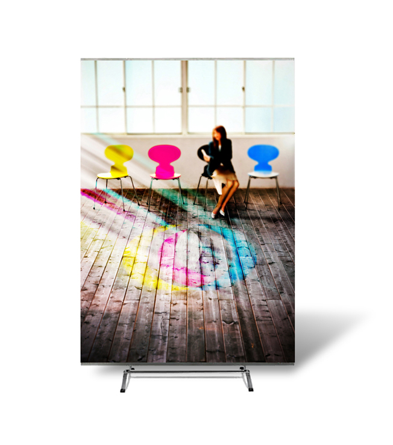

Graphic design is a profession,[2] academic discipline[3][4][5] and applied art whose activity consists in projecting visual communications intended to transmit specific messages to social groups, with specific objectives.[6] Graphic design is an interdisciplinary branch of design[1] and of the fine arts. Its practice involves creativity, innovation and lateral thinking using manual or digital tools, where it is usual to use text and graphics to communicate visually.
The role of the graphic designer in the communication process is that of encoder or interpreter of the message. They work on the interpretation, ordering, and presentation of visual messages. Usually, graphic design uses the aesthetics of typography and the compositional arrangement of the text, ornamentation, and imagery to convey ideas, feelings, and attitudes beyond what language alone expresses. The design work can be based on a customer's demand, a demand that ends up being established linguistically, either orally or in writing, that is, that graphic design transforms a linguistic message into a graphic manifestation.[7]
Graphic design has, as a field of application, different areas of knowledge focused on any visual communication system. For example, it can be applied in advertising strategies, or it can also be applied in the aviation world[8] or space exploration.[9][10] In this sense, in some countries graphic design is related as only associated with the production of sketches and drawings, this is incorrect, since visual communication is a small part of a huge range of types and classes where it can be applied.
With origins in Antiquity and the Middle Ages,[11] graphic design as applied art was initially linked to the boom of rise of printing in Europe in the 15th century and the growth of consumer culture in the Industrial Revolution. From there it emerged as a distinct profession in the West, closely associated with advertising in the 19th century[12] and its evolution allowed its consolidation in the 20th century. Given the rapid and massive growth in information exchange today, the demand for experienced designers is greater than ever, particularly because of the development of new technologies and the need to pay attention to human factors beyond the competence of the engineers who develop them.[13]

William Addison Dwiggins is often credited with first using the term "graphic design" in a 1922 article,[14] although it appears in a 4 July 1908 issue (volume 9, number 27) of Organized Labor, a publication of the Labor Unions of San Francisco, in an article about technical education for printers:[15]
An Enterprising Trades Union … The admittedly high standard of intelligence which prevails among printers is an assurance that with the elemental principles of design at their finger ends many of them will grow in knowledge and develop into specialists in graphic design and decorating. …
A decade later, the 1917 - 1918 course catalog of the California School of Arts & Crafts advertised a course titled Graphic Design and Lettering, which replaced one called Advanced Design and Lettering. Both classes were taught by Frederick Meyer.[16]
In both its lengthy history and in the relatively recent explosion of visual communication in the 20th and 21st centuries, the distinction between advertising, art, graphic design and fine art has disappeared. They share many elements, theories, principles, practices, languages and sometimes the same benefactor or client. In advertising, the ultimate objective is the sale of goods and services. In graphic design, "the essence is to give order to information, form to ideas, expression, and feeling to artifacts that document the human experience."[17]
In China, during the Tang Dynasty (618–907) wood blocks were cut to print on textiles and later to reproduce Buddhist texts. A Buddhist scripture printed in 868 is the earliest known printed book. Beginning in the 11th century in China, longer scrolls and books were produced using movable type printing, making books widely available during the Song dynasty (960–1279).[18] In the mid-15th century in Mainz, Germany, Johannes Gutenberg developed a way to reproduce printed pages at a faster pace using movable type made with a new metal alloy[19] that created a revolution in the dissemination of information.[20]
In 1849, Henry Cole became one of the major forces in design education in Great Britain, informing the government of the importance of design in his Journal of Design and Manufactures. He organized the Great Exhibition as a celebration of modern industrial technology and Victorian design.
From 1891 to 1896, William Morris' Kelmscott Pres was a leader in graphic design associated with the Arts and Crafts movement, creating hand-made books in medieval and Renaissance era style,[21] in addition to wallpaper and textile designs.[22] Morris' work, along with the rest of the Private Press movement, directly influenced Art Nouveau.[23]
Will H. Bradley became one of the notable graphic designers in the late nineteenth-century due to creating art pieces in various Art Nouveau styles. Bradley created a number of designs as promotions for a literary magazine titled The Chap-Book.[24]
In 1917, Frederick H. Meyer, director and instructor at the California School of Arts and Crafts, taught a class entitled "Graphic Design and Lettering".[25] Raffe's Graphic Design, published in 1927, was the first book to use "Graphic Design" in its title.[26]
The signage in the London Underground is a classic design example[27] of the modern era. Although he lacked artistic training, Frank Pick led the Underground Group design and publicity movement. The first Underground station signs were introduced in 1908 with a design of a solid red disk with a blue bar in the center and the name of the station. The station name was in white sans-serif letters. It was in 1916 when Pick used the expertise of Edward Johnston to design a new typeface for the Underground. Johnston redesigned the Underground sign and logo to include his typeface on the blue bar in the center of a red circle.[28]
In the 1920s, Soviet constructivism applied 'intellectual production' in different spheres of production. The movement saw individualistic art as useless in revolutionary Russia and thus moved towards creating objects for utilitarian purposes. They designed buildings, theater sets, posters, fabrics, clothing, furniture, logos, menus, etc.[29]
Jan Tschichold codified the principles of modern typography in his 1928 book, New Typography.[30] He later repudiated the philosophy he espoused in this book as fascistic, but it remained influential.[citation needed] Tschichold, Bauhaus typographers such as Herbert Bayer and László Moholy-Nagy and El Lissitzky greatly influenced graphic design. They pioneered production techniques[citation needed] and stylistic devices used throughout the twentieth century. The following years saw graphic design in the modern style gain widespread acceptance and application.[31]
The professional graphic design industry grew in parallel with consumerism. This raised concerns and criticisms, notably from within the graphic design community with the First Things First manifesto. First launched by Ken Garland in 1964, it was re-published as the First Things First 2000 manifesto in 1999 in the magazine Emigre 51[32] stating "We propose a reversal of priorities in favor of more useful, lasting and democratic forms of communication – a mindshift away from product marketing and toward the exploration and production of a new kind of meaning. The scope of debate is shrinking; it must expand. Consumerism is running uncontested; it must be challenged by other perspectives expressed, in part, through the visual languages and resources of design."[33]
Graphic design can have many applications, from road signs to technical schematics and reference manuals. It is often used in branding products and elements of company identity such as logos, colors, packaging, labelling and text.
From scientific journals to news reporting, the presentation of opinion and facts is often improved with graphics and thoughtful compositions of visual information – known as information design. With the advent of the web, information designers with experience in interactive tools are increasingly used to illustrate the background to news stories. Information design can include data visualization, which involves using programs to interpret and form data into a visually compelling presentation, and can be tied in with information graphics.
A graphic design project may involve the creative presentation of existing text, ornament, and images.
The "process school" is concerned with communication; it highlights the channels and media through which messages are transmitted and by which senders and receivers encode and decode these messages. The semiotic school treats a message as a construction of signs which through interaction with receivers, produces meaning; communication as an agent.
Typography includes type design, modifying type glyphs and arranging type. Type glyphs (characters) are created and modified using illustration techniques. Type arrangement is the selection of typefaces, point size, tracking (the space between all characters used), kerning (the space between two specific characters) and leading (line spacing).
Typography is performed by typesetters, compositors, typographers, graphic artists, art directors, and clerical workers. Until the digital age, typography was a specialized occupation. Certain fonts communicate or resemble stereotypical notions. For example, 1942 Report is a font which types text akin to a typewriter or a vintage report.[34]
Page layout deals with the arrangement of elements (content) on a page, such as image placement, text layout and style. Page design has always been a consideration in printed material and more recently extended to displays such as web pages. Elements typically consist of type (text), images (pictures), and (with print media) occasionally place-holder graphics such as a dieline for elements that are not printed with ink such as die/laser cutting, foil stamping or blind embossing.

In the mid-1980s desktop publishing and graphic art software applications introduced computer image manipulation and creation capabilities that had previously been manually executed. Computers enabled designers to instantly see the effects of layout or typographic changes, and to simulate the effects of traditional media. Traditional tools such as pencils can be useful even when computers are used for finalization; a designer or art director may sketch numerous concepts as part of the creative process.[35] Styluses can be used with tablet computers to capture hand drawings digitally.[36]
Designers disagree whether computers enhance the creative process.[37] Some designers argue that computers allow them to explore multiple ideas quickly and in more detail than can be achieved by hand-rendering or paste-up.[38] While other designers find the limitless choices from digital design can lead to paralysis or endless iterations with no clear outcome.
Most designers use a hybrid process that combines traditional and computer-based technologies. First, hand-rendered layouts are used to get approval to execute an idea, then the polished visual product is produced on a computer.
Graphic designers are expected to be proficient in software programs for image-making, typography and layout. Nearly all of the popular and "industry standard" software programs used by graphic designers since the early 1990s are products of Adobe Inc. Adobe Photoshop (a raster-based program for photo editing) and Adobe Illustrator (a vector-based program for drawing) are often used in the final stage. Some designers across the world use CorelDraw. CorelDraw is a vector graphics editor software developed and marketed by Corel Corporation. Open source software used to edit the vector graphis is Inkscape. Primary file format used in Inkscape is Scalable Vector Graphics (SVG). You can import or export the file in any other vector format. Designers often use pre-designed raster images and vector graphics in their work from online design databases. Raster images may be edited in Adobe Photoshop, vector logos and illustrations in Adobe Illustrator and CorelDraw, and the final product assembled in one of the major page layout programs, such as Adobe InDesign, Serif PagePlus and QuarkXPress.
Powerful open-source programs (which are free) are also used by both professionals and casual users for graphic design, these include Inkscape (for vector graphics), GIMP (for photo-editing and image manipulation), Krita (for painting), and Scribus (for page layout).
Since the advent of personal computers, many graphic designers have become involved in interface design, in an environment commonly referred to as a Graphical user interface (GUI). This has included web design and software design when end user-interactivity is a design consideration of the layout or interface. Combining visual communication skills with an understanding of user interaction and online branding, graphic designers often work with software developers and web developers to create the look and feel of a web site or software application. An important aspect of interface design is icon design.
Since the advent of personal computers, many graphic designers have become involved in interface design, in an environment commonly referred to as a Graphical user interface (GUI). This has included web design and software design when end user-interactivity is a design consideration of the layout or interface. Combining visual communication skills with an understanding of user interaction and online branding, graphic designers often work with software developers and web developers to create the look and feel of a web site or software application. An important aspect of interface design is icon design.
Experiential graphic design is the application of communication skills to the built environment.[39] This area of graphic design requires practitioners to understand physical installations that have to be manufactured and withstand the same environmental conditions as buildings. As such, it is a cross-disciplinary collaborative process involving designers, fabricators, city planners, architects, manufacturers and construction teams.
Experiential graphic designers try to solve problems that people encounter while interacting with buildings and space (also called environmental graphic design). Examples of practice areas for environmental graphic designers are wayfinding, placemaking, branded environments, exhibitions and museum displays, public installations and digital environments.
Graphic design career paths cover all parts of the creative spectrum and often overlap. Workers perform specialized tasks, such as design services, publishing, advertising and public relations. As of 2017, median pay was $48,700 per year.[41] The main job titles within the industry are often country specific. They can include graphic designer, art director, creative director, animator and entry level production artist. Depending on the industry served, the responsibilities may have different titles such as "DTP associate" or "Graphic Artist". The responsibilities may involve specialized skills such as illustration, photography, animation, visual effects or interactive design.
Employment in design of online projects was expected to increase by 35% by 2026, while employment in traditional media, such as newspaper and book design, expect to go down by 22%. Graphic designers will be expected to constantly learn new techniques, programs, and methods.[42]
Graphic designers can work within companies devoted specifically to the industry, such as design consultancies or branding agencies, others may work within publishing, marketing or other communications companies. Especially since the introduction of personal computers, many graphic designers work as in-house designers in non-design oriented organizations. Graphic designers may also work freelance, working on their own terms, prices, ideas, etc.
A graphic designer typically reports to the art director, creative director or senior media creative. As a designer becomes more senior, they spend less time designing and more time leading and directing other designers on broader creative activities, such as brand development and corporate identity development. They are often expected to interact more directly with clients, for example taking and interpreting briefs.
Jeff Howe of Wired Magazine first used the term "crowdsourcing" in his 2006 article, "The Rise of Crowdsourcing."[43][44] It spans such creative domains as graphic design, architecture, apparel design, writing, illustration, and others. Tasks may be assigned to individuals or a group and may be categorized as convergent or divergent. An example of a divergent task is generating alternative designs for a poster. An example of a convergent task is selecting one poster design. Companies, startups, small businesses and entrepreneurs have all benefitted from design crowdsourcing since it helps them source great graphic designs at a fraction of the budget they used to spend before. Getting a logo design through crowdsourcing being one of the most common. Major companies that operate in the design crowdsourcing space are generally referred to as design contest sites.[citation needed]